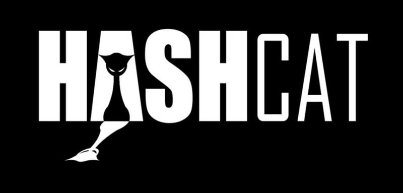

14.05.2020 Админ Нет комментариев

В этой статье пойдет речь о замечательном инструменте для расшифровки огромного числа алгоритмов — HASHCAT. Это одна из самых быстрых БЕСПЛАТНЫХ утилит для восстановления зашифрованных паролей.Скачать ее можно под разные платформы на официльном сайте. Вы только посмотрите на список алгоритмов, которые она может взламывать:
Нажмите, чтобы раскрыть весь список алгоритмов (пришлось свернуть его, потому что он просто огромный! :))
Как видно, можно взламывать и MD5, SHA, Keccak, WPA, архивы ZIP/RAR, документы MS Office, хэши паролей операционных систем и даже ключи крипто-кошельков! Конечно, все возможности будут упираться лишь в мощности Вашего железа. Hashcat умеет использовать GPU (графический процессор), что значительно ускоряет процесс. Поэтому, если у Вас имеется соверменная видеокарта, ее можно использовать для взлома пароля.
Hashcat включен в такой известный дистрибуетив линукс, как Kali Linux.
Особенности Hashcat:
Памятка по HASHCAT (нажмите сюда)
Ниже рассмотрим пример использования hashcat на хэше MD5.
1 – Список слов
В этом примере произведем перебор по произольному списку слов в качестве паролей из файла
# hashcat -a 0 -m 0 -w 4 -o cracked.txt hash.txt custom_list.txt
-a 0 — атака по словарю
-m 0 — тип алгоритма MD5
-w 4 — профиль производительности
-o cracked.txt — это файл, в который будут записаны найденные пароли
hash.txt — файл в хэшами (каждый с новой строки)
custom_list.txt — словарь, по которому будет сделан перебор (каждое слово с новой строки)
После нахождения нужного хэша hashcat напишет нам Cracked и в файле cracked.txt мы увидим запись «хэш:пароль».
2 – Список слов + правила
# hashcat -a 0 -m 0 hash.txt custom_list.txt -r rules --debug-mode=1 --debug-file=matched.rule --force
3 – Словарь/список слов
# hashcat -a 0 -m 0 hash.txt wordlist.txt -r best64.rule --debug-mode=1 --debug-file=matched.rule --force
4 – Словарь/список слов + правила
# hashcat -a 0 -m 0 -w 4 hash.txt wordlist.txt -r /usr/share/hashcat/rules/best64.rule --debug-mode=1 --debug-file=matched.rule --force
5 – Произвольный список слов + правила
Добавьте все вновь обнаруженные пароли в свой пользовательский список слов и снова запустите атаку с перестановкой правила, учитывая любые другие вариации, просто используя echo или awk, чтобы добавить новое правило, а затем используйте вышеприведенную команду.
:: awk -F “:” ‘{print $2}’ hashcat.potfile >> custom_list.txt
6 – По маске
Так мы можем начать перебор по маске, котрая описана в файле rockyou-1-60.hcmask, учитывая длину и паттерны.
# hashcat -a 3 -m 0 -w 4 hash.txt /usr/share/hashcat/masks/rockyou-1-60.hcmask --force
7 – Гибридный словарь + маска
Используя словарь, делайте гибридные атаки, ища больше вариаций общих слов или известных паролей, добавляя/удаляя маски к этим кандидатам.
# hashcat -a 7 -m 0 -w 4 hash.txt rockyou-1–60.hcmask dict.txt
или
# hashcat -a 6 -m 0 -w 4 hash.txt dict.txt rockyou-1-60.hcmask
8 – Пользовательский список слов + правила
Добавьте все обнаруженные пароли обратно в свой пользовательский список слов и снова запустите атаку с правилами перестановки, предлагающими любые другие вариации.
# awk -F “:” ‘{print $2}’ hashcat.potfile >> custom_list.txt
# hashcat -a 0 -m 0 -w 4 hash.txt custom_list.txt -r dive.rule --loopback
9 – Комбо
Используя собственный словарь, выполните комбинированную атаку, индивидуально сопоставляя кандидатов и словарь вместе, чтобы сформировать новых кандидатов.
# hashcat -a 1 -m 0 -w 4 hash.txt dict.txt dict.txt
10 – Произвольная гибридная атака
Добавьте все обнаруженные пароли обратно в свой пользовательский список слов и выполните гибридную атаку.
# awk -F “:” ‘{print $2}’ hashcat.potfile >> custom_list.txt
# hashcat -a 6 -m 0 -w 4 hash.txt custom_list.txt rockyou-1-60.hcmask
# hashcat -a 7 -m 0 -w 4 hash.txt rockyou-1-60.hcmask custom_list.txt
11 – Атака по произвольной маске
Простые и слабые пароли хорошо поддаются взлому, но не все. Создайте пользовательскую маску на основе Ваших текущих взломанных паролей.
# hashcat -a 3 -m 0 -w 4 hash.txt custom_masks.hcmask
12 – Брутфорс (BRUTE-FORCE)
Когда Вы уже препробывали все, что описано выше, остается «грубая сила» 🙂 Обычно, при брутфорсе подбирать пароль больше 8 символов бессысмленно из-за аппаратных возможностей.
Используйте следующие наборы символов, чтобы взломать свой хэш:
?l = abcdefghijklmnopqrstuvwxyz (строчные)
?u = ABCDEFGHIJKLMNOPQRSTUVWXYZ(заглавные)
?d = 0123456789(цифры)
?h = 0123456789abcdef(цифры + строчные)
?H = 0123456789ABCDEF(цифры + заглавные)
?s = «space»!»#$%&'()*+,-./:;<=>?@[\]^_`{|}~ (спец символы)
?a = ?l?u?d?s (строчные + заглавные + цифры + спец символы)
Например, 8-символьный пароль, который включает все строчные, заглавные буквы, цифры и спец символы:
# hashcat -a 3 -m 0 -w 4 hash.txt -i ?a?a?a?a?a?a?a?a --force
или так гибче можно потом менять набор:
# hashcat -a 3 -m 0 -w 4 hash.txt -i -1 ?a ?1?1?1?1?1?1?1?1 --force
А вот если нужно только цифрами:
# hashcat -a 3 -m 0 -w 4 hash.txt -i -1 ?d ?1?1?1?1?1?1?1?1 --force
Можно указать свои символы (abc123ASDF):
# hashcat -a 3 -m 0 -w 4 hash.txt -i -1 abc123ASDF ?1?1?1?1?1?1?1?1 --force
А вот если надо использовать болееодного набора, если мы знаем что первые два символа — цифры, остальные 6 — буквы:
# hashcat -a 3 -m 0 -w 4 hash.txt -i -1 ?d -2 ?l?u ?1?1?2?2?2?2?2?2 --force
Вот так то. Hashcat много всего уммет, можно написать целую книгу, но я остановлюсь…
А здесь Вы можете найти хороший сборник паролей:
Кстати, если у Вас недостаточно мощностей, можете заказать взлом хэша здесь или пишите через обратную связь.